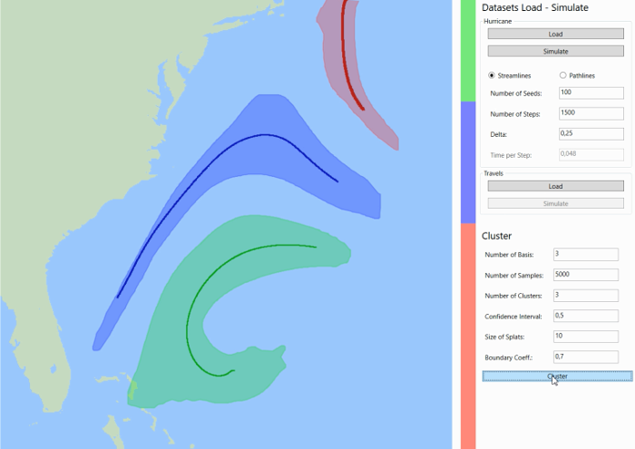
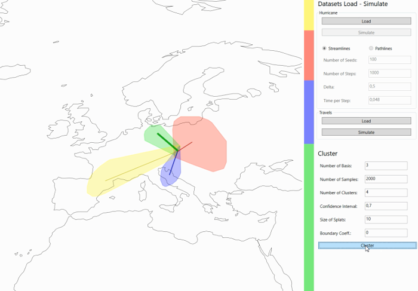

Visualisierung 2 - Streamline Variability Plots
Nicolas Grossmann, 1325103
Thomas Köppel, 1327052
Overview

We have implemented a flow visualization tool after "Streamline Variability Plots
for Characterizing the Uncertainty in Vector Field Ensembles" by Ferstl et al. 2016 allowing stream- and pathlines to be clustered into different trends emphazising
a streamline median (middle line of a cluster), the convidence lobes around the median and the number of streamlines in a specific cluster by a coloured barplot.
The streamlines are firstly generated, pca is transforming the data allowing clustering.
In each cluster a streamline median is determined and streamlines are sampled back and plotted in 2D using splatting and surrounded by a boundary. These Streamline
Variability Plots show trends and statistical parameters (like the confidence interval) in the same domain the data resides.
Furthermore, we applied this technique to a new kind of data: Travel Data, to create an informative visualization showing major tourism trends.

Configuration
- Matlab needs to be registered as a COM Server,
use following command in Matlab with administrator privelege
- The following Matlab command needs to be executed and the output saved in the system variable PATH under Systemumgebungsvariablen bearbeiten/Umgebungsvariablen
- res = fullfile(matlabroot,'bin',computer('arch'))
-
The config file SVP.config needs to contain the relative paths from the exe file to the folder containing the Malab scripts and the u and v.csv files
- The first line contains the relative path to the Matlab files
- The second line contains the relative path to the csv files